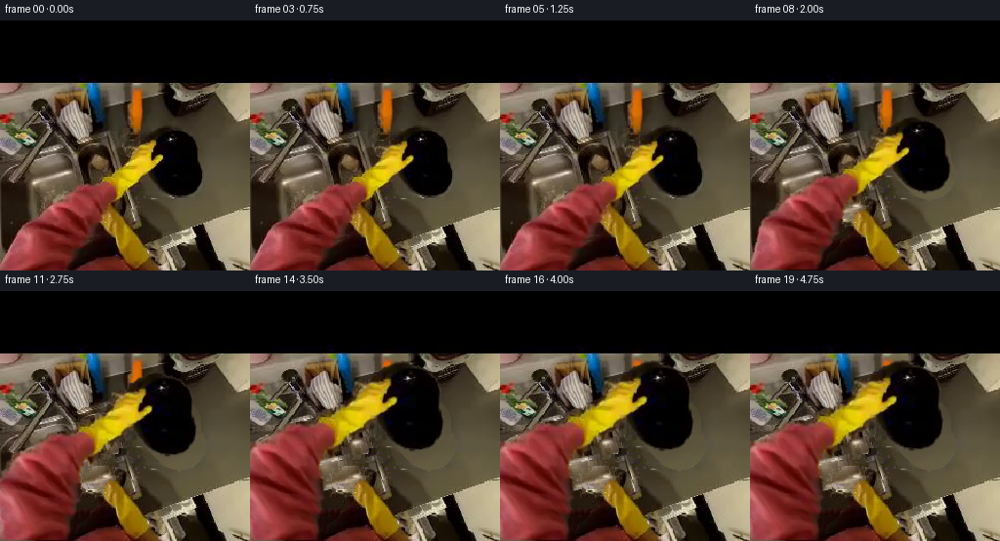
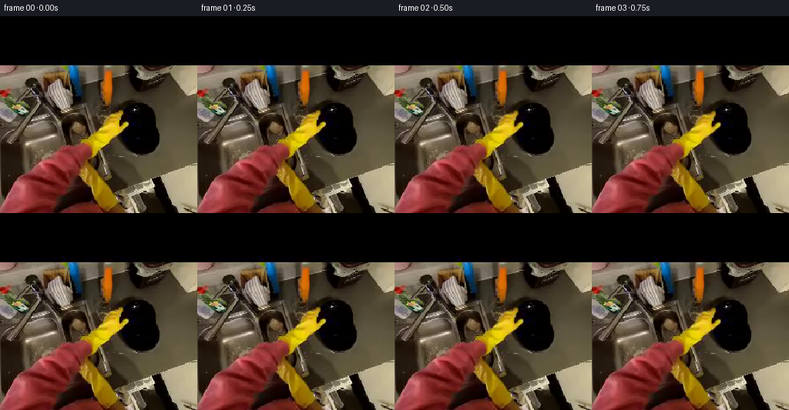
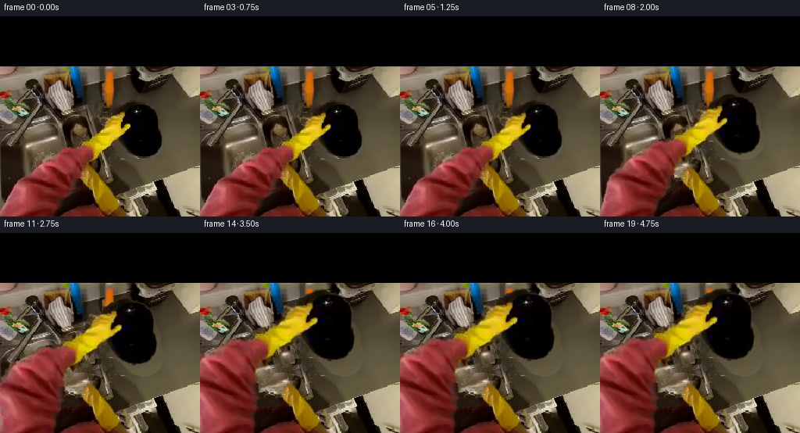

CODING AGENTS AS PIXEL WORLD MODELS
traex/GPT-6.1-Sol · common50_0024
点击播放 · 原生 RGB 像素
逐轮保存的候选
回放视频、检查图与代码变化。
每份候选均可单独播放。实际图片检查记录在下方工具轨迹中。
候选 01播放与检查图
点击播放 · 原生 RGB 像素


展开代码变化
--- 上一保存版本
+++ 本次保存版本
@@ -0,0 +1,304 @@
+"""Deterministic, image-only egocentric plate pickup animation.
+
+Uses RGB segmentation, source-pixel layers, local background reconstruction,
+and smooth articulated image warps. No models or external assets are used.
+"""
+from pathlib import Path
+import math
+import numpy as np
+from PIL import Image, ImageDraw
+import cv2
+from scipy.ndimage import (
+ label, binary_fill_holes, binary_closing, binary_dilation,
+ distance_transform_edt, gaussian_filter,
+)
+import artifact_io
+
+ROOT = Path(__file__).resolve().parent
+W = H = 256
+YY, XX = np.mgrid[:H, :W].astype(np.float32)
+
+
+def ease(t):
+ t = np.clip(t, 0.0, 1.0)
+ return t*t*(3.0-2.0*t)
+
+
+def polygon(points):
+ # Supersampled silhouette, retaining the photographed outlines.
+ img = Image.new('L', (W*4, H*4))
+ ImageDraw.Draw(img).polygon([(round(4*x),round(4*y)) for x,y in points], fill=255)
+ return np.asarray(img.resize((W,H), Image.Resampling.LANCZOS), dtype=np.float32)/255
+
+
+def component(mask, x, y):
+ ll, _ = label(mask)
+ return ll == ll[y,x]
+
+
+def remap(a, x, y, border=cv2.BORDER_CONSTANT):
+ return cv2.remap(a.astype(np.float32), x.astype(np.float32),
+ y.astype(np.float32), cv2.INTER_LINEAR,
+ borderMode=border, borderValue=0)
+
+
+def over(bg, rgb, alpha):
+ return bg * (1-alpha[...,None]) + rgb * alpha[...,None]
+
+
+def texture_inpaint(rgb, unknown):
+ """Fill unseen surfaces using only known patches of this photograph.
+
+ A diffusion initialization is followed by boundary-directed exemplar
+ copying. It is especially useful for the small strip exposed beside
+ the forearm, where pure diffusion would erase the room's texture.
+ """
+ unknown = unknown.copy()
+ seed = cv2.inpaint(rgb, unknown.astype(np.uint8)*255, 5, cv2.INPAINT_TELEA)
+ # Source patches must be wholly known, and contain no yellow/red hand.
+ r,g,b=rgb.astype(np.float32).transpose(2,0,1)
+ colored=((r>65)&(r>1.65*g)&(r>1.5*b)) | ((r>70)&(g>45)&(b<.6*g)&(r<1.8*g))
+ banned = unknown | colored | (YY<67)
+ radius=5
+ valid = cv2.boxFilter(banned.astype(np.float32), -1, (11,11), normalize=False)<.1
+ valid[:72]=False;valid[-6:]=False;valid[:,:6]=False;valid[:,-6:]=False
+ cy,cx=np.where(valid & ((YY.astype(int)%3)==0) & ((XX.astype(int)%3)==0))
+ if len(cx)==0:
+ return seed
+ patches=np.stack([rgb[y-radius:y+radius+1,x-radius:x+radius+1] for y,x in zip(cy,cx)]).astype(np.float32)
+ flat=patches.reshape(len(patches),-1)
+ flat2=flat*flat
+ work=rgb.astype(np.float32).copy()
+ confidence=(~unknown).astype(np.float32)
+ # Confidence favors stable boundaries; local matching discourages
+ # copying unrelated furniture into the newly exposed tabletop.
+ iterations=0
+ while unknown.any() and iterations<650:
+ boundary=unknown & binary_dilation(~unknown)
+ boundary[:6]=False;boundary[-6:]=False;boundary[:,:6]=False;boundary[:,-6:]=False
+ ys,xs=np.where(boundary)
+ if len(xs)==0:
+ break
+ conf=cv2.boxFilter(confidence,-1,(11,11),normalize=True)
+ # Grow from the most constrained boundary first.
+ ii=np.argmax(conf[ys,xs])
+ y,x=int(ys[ii]),int(xs[ii])
+ sl=np.s_[y-radius:y+radius+1,x-radius:x+radius+1]
+ known=~unknown[sl]
+ weights=np.repeat(known[...,None],3,axis=2).reshape(-1).astype(np.float32)
+ target=work[sl].reshape(-1)
+ denom=max(float(weights.sum()),1)
+ # Equivalent to masked RGB mean squared patch distance.
+ score=(flat2 @ weights - 2*(flat @ (target*weights)) + np.sum(target*target*weights))/denom
+ score+=.018*((cx-x)**2+(cy-y)**2)
+ j=int(np.argmin(score))
+ missing=unknown[sl]
+ work[sl][missing]=patches[j][missing]
+ confidence[sl][missing]=max(.1,float(conf[y,x]))
+ unknown[sl]=False
+ iterations+=1
+ work[unknown]=seed[unknown]
+ # A mild blend with diffusion removes quilt seams without losing detail.
+ out=work*.88+seed.astype(np.float32)*.12
+ return np.clip(out,0,255).astype(np.uint8)
+
+
+def prepare(source):
+ r,g,b=source.astype(np.float32).transpose(2,0,1)
+ glove0=component((r>75)&(g>50)&(b<g*.65)&(r<g*1.85),140,150)
+ glove0=binary_fill_holes(binary_closing(glove0,iterations=1))
+ # RGB mask includes the fingertips and the darker border of the cuff.
+ goutline=polygon([
+ (153,122),(160,122),(160,127),(159,130),(157,134),
+ (157,137),(160,136),(164,136),(167,138),(168,141),
+ (165,145),(162,149),(157,153),(154,158),(149,162),
+ (145,166),(139,170),(134,175),(129,180),(124,186),
+ (117,186),(115,182),(115,177),(114,172),(110,168),
+ (104,166),(101,162),(103,158),(109,154),(117,152),
+ (120,147),(127,145),(131,141),(129,138),(132,133),
+ (132,129),(137,126),(143,126),(150,124),
+ ])
+ yellowish=(r>48)&(g>29)&(b<g*.79)&(r<g*2.05)
+ glove=glove0 | (yellowish & (goutline>.1))
+ glove=binary_fill_holes(binary_closing(glove,iterations=1))
+ glove=gaussian_filter(binary_dilation(glove,iterations=1).astype(np.float32),.48)
+ glove *= (goutline>.001) | binary_dilation(glove0,iterations=2)
+
+ # Sleeve silhouette comes from the connected red fabric, including dark
+ # seams inside its boundary, not from a newly drawn generic arm.
+ red0=component((r>65)&(r>g*1.5)&(r>b*1.4),80,180)
+ red0=binary_fill_holes(binary_closing(red0,iterations=2))
+ # Complete shaded folds along the inside of the forearm.
+ left=[(101,164),(86,166),(77,169),(76,173),(71,175),
+ (67,179),(61,182),(57,185),(47,187),(46,192),
+ (40,195),(39,199),(35,201),(29,203),(24,207),
+ (21,211),(21,213),(16,215),(13,219),(14,223),
+ (12,227),(11,231),(7,234),(5,238),(3,244),
+ (0,247),(0,256)]
+ right=[(69,256),(73,248),(77,238),(85,231),(90,225),
+ (97,218),(101,211),(105,203),(111,195),(118,190),
+ (122,184),(128,177),(131,171),(116,165)]
+ sleevepoly=polygon(left+right)
+ sleeve=((sleevepoly>.32)|red0) & (YY>=163)
+ # Other yellow foreground material beside the sleeve stays in the room.
+ sleeve &= ~((YY>188)&(r>85)&(g>55)&(b<g*.62)&(r<g*1.9))
+ sleeve=binary_fill_holes(binary_closing(sleeve,iterations=1))
+ sleeve=gaussian_filter(sleeve.astype(np.float32),.5)
+ arm=np.maximum(glove,sleeve)
+
+ # The plate's visible right-hand outline is traced from its dark RGB
+ # component. Its small hidden portion is completed behind the fingers.
+ dark=(np.max(source,axis=2)<39)&(YY>104)&(YY<183)&(XX>139)&(XX<211)
+ visible=component(dark,184,150)
+ visible=binary_fill_holes(binary_closing(visible,iterations=1))
+ footprint=polygon([
+ (164,109),(173,107.8),(181,109),(190,114),(197,120),
+ (200,126),(202,133),(203,141),(205,149),(207.5,156),
+ (207,163),(205,169),(202,173),(198,177),(192,180),
+ (184,182),(177,180),(170,177),(164,172),(157,165),
+ (151,158),(146,149),(143,139),(143,131),(146,123),
+ (150,117),(156,112),
+ ])
+ # Preserve photographed edge pixels wherever visible; completion is
+ # confined to the occluded side of the rim.
+ platehard=binary_fill_holes(binary_dilation(visible,iterations=1))
+ platehard |= ((footprint>.4)&binary_dilation(glove>.15,iterations=3))
+ platealpha=gaussian_filter(platehard.astype(np.float32),.48)
+ platealpha[YY<106]=0
+ platergb=source.astype(np.float32).copy()
+ valid=visible & (glove<.05)
+ _,nearest=distance_transform_edt(~valid,return_indices=True)
+ fill=source[nearest[0],nearest[1]].astype(np.float32)
+ hidden=(glove>.025)&(platealpha>.01)
+ platergb[hidden]=fill[hidden]
+
+ # Original outlines are removed only from the background; the clean
+ # arm and plate retain all the first-frame shading and texture.
+ removal=binary_dilation((arm>.035)|(platealpha>.035),iterations=2)
+ removal[YY<65]=False
+ clean=texture_inpaint(source,removal)
+
+ # The surface behind the plate is the same warm tabletop found at its
+ # immediate right. Use that photographed grain rather than blur.
+ # Patch sampling is performed in a smoothly shifted local coordinate.
+ sx=210+(XX-143)*.60
+ sy=YY+.20*(XX-180)
+ table=remap(source,np.clip(sx,210,252),np.clip(sy,109,194),cv2.BORDER_REFLECT_101)
+ table-=np.clip((209-XX)*.045,0,3.5)[...,None]
+ tablezone=polygon([(159,106),(182,105),(201,115),(211,139),
+ (213,167),(200,184),(178,186),(157,174),
+ (145,151),(145,125)])
+ tablemix=gaussian_filter((tablezone>.2).astype(np.float32),2)
+ # Fill ONLY pixels that were hidden, preserving every visible surface.
+ tablemix*=removal
+ clean=over(clean.astype(np.float32),table,tablemix)
+
+ # Soft edge masks in the reconstruction are surrounded with their
+ # original pixels, ensuring an imperceptible initial transition.
+ return clean.astype(np.float32),arm.astype(np.float32),platergb,platealpha
+
+
+def transform_at(i):
+ sec=i/4
+ grip=float(ease(sec/1.1))
+ lift=float(ease((sec-1.1)/2.65))
+ # A short final settling movement, not a second action.
+ settling=max(0,sec-3.75)
+ settle=math.sin(settling*4)*math.exp(-settling*2) if settling else 0
+ scale=1+.245*lift
+ theta=math.radians(5.5*lift)
+ c,s=math.cos(theta),math.sin(theta)
+ A=np.array([[scale*c,-scale*s],[scale*s,scale*c]],np.float32)
+ center=np.array([177.5,145.0],np.float32)
+ dest=center+np.array([-15.5*lift+.45*settle,-27.0*lift+.6*settle],np.float32)
+ return A,center,dest,grip,lift
+
+
+def warp_plate(rgb,alpha,A,c,d):
+ inv=np.linalg.inv(A)
+ vx,vy=XX-d[0],YY-d[1]
+ x=c[0]+inv[0,0]*vx+inv[0,1]*vy
+ y=c[1]+inv[1,0]*vx+inv[1,1]*vy
+ a=remap(alpha,x,y)
+ # Premultiplied alpha avoids colored fringes during subpixel motion.
+ p=remap(rgb*alpha[...,None],x,y)
+ out=p/np.maximum(a[...,None],1.e-5)
+ return out,a
+
+
+def arm_displacement(x,y,A,c,d,grip):
+ # Fingers, palm and wrist move rigidly with the lifted plate. The
+ # photographed sleeve bends continuously to a fixed lower-frame anchor.
+ weight=ease((257-y)/76)
+ tx=d[0]+A[0,0]*(x-c[0])+A[0,1]*(y-c[1])
+ ty=d[1]+A[1,0]*(x-c[0])+A[1,1]*(y-c[1])
+ dx=(tx-x)*weight
+ dy=(ty-y)*weight
+ # Close the index finger and thumb around the near edge before lifting.
+ index=np.exp(-(((x-154)/10)**2+((y-128)/10)**2))
+ thumb=np.exp(-(((x-161)/7)**2+((y-141)/7)**2))
+ palm=np.exp(-(((x-139)/18)**2+((y-152)/22)**2))
+ dx+=grip*(2.0*index+.7*thumb+.55*palm)
+ dy+=grip*(2.1*index+1.2*thumb)
+ return dx,dy
+
+
+def warp_arm(rgb,alpha,A,c,d,grip):
+ x,y=XX.copy(),YY.copy()
+ # Numerical inverse of a smooth 2D articulated motion. This retains
+ # skin/glove texture instead of replacing it with a synthetic hand.
+ for _ in range(28):
+ dx,dy=arm_displacement(x,y,A,c,d,grip)
+ x=.22*x+.78*(XX-dx)
+ y=.22*y+.78*(YY-dy)
+ a=remap(alpha,x,y)
+ p=remap(rgb.astype(np.float32)*alpha[...,None],x,y)
+ out=p/np.maximum(a[...,None],1.e-5)
+ return out,a
+
+
+def main():
+ source=np.asarray(Image.open(ROOT/'first_frame.png').convert('RGB'))
+ assert source.shape==(256,256,3)
+ clean,armmask,plate_rgb,platemask=prepare(source)
+ frames=[source.copy()]
+ # Baseline residual restores exact source-colored antialiasing around
+ # the layer boundaries and fades as those boundaries leave their origin.
+ baseline=over(over(clean,plate_rgb,platemask),source.astype(np.float32),armmask)
+ residual=source.astype(np.float32)-baseline
+ for i in range(1,20):
+ A,c,d,grip,lift=transform_at(i)
+ bg=clean.copy()
+ if lift>0:
+ # A faint diffuse shadow separates the raised plate from the
+ # support surface and rapidly softens as the gap increases.
+ cx=180-6*lift;cy=151+5*lift
+ rad=((XX-cx)/(28+8*lift))**2+((YY-cy)/(27+3*lift))**2
+ shadow=np.exp(-rad*1.65)*(.115*lift*(1-.42*lift))
+ shadow*=ease((YY-111)/15)
+ bg*=1-shadow[...,None]
+ p,pa=warp_plate(plate_rgb,platemask,A,c,d)
+ # A small change in reflected light accompanies the wrist rotation.
+ p=np.clip(p*(1+.06*lift)+.42*lift,0,255)
+ rgb=over(bg,p,pa)
+ h,ha=warp_arm(source,armmask,A,c,d,grip)
+ h=np.clip(h*(1-.022*lift),0,255)
+ rgb=over(rgb,h,ha)
+ rgb+=residual*(1-ease(lift/.16))
+ # The input's upper black border is part of the fixed view.
+ rgb[:63]=source[:63]
+ # Initial contact grows out of the exact image instead of popping.
+ if i<=2:
+ fade=ease(i/2.5)
+ rgb=source.astype(np.float32)*(1-fade)+rgb*fade
+ frames.append(np.clip(np.rint(rgb),0,255).astype(np.uint8))
+ frames=np.stack(frames)
+ assert np.array_equal(frames[0],source)
+ artifact_io.save(frames,ROOT)
+ print('Saved',frames.shape,frames.dtype,'to',ROOT)
+ print('Frame-zero exact:',np.array_equal(frames[0],source))
+ print('Mean per-frame RGB step:',np.abs(np.diff(frames.astype(np.int16),axis=0)).mean(axis=(1,2,3)).round(3).tolist())
+
+
+if __name__=='__main__':
+ main()
候选 02播放与检查图
点击播放 · 原生 RGB 像素

展开代码变化
--- 上一保存版本
+++ 本次保存版本
@@ -127,7 +127,7 @@
# Sleeve silhouette comes from the connected red fabric, including dark
# seams inside its boundary, not from a newly drawn generic arm.
red0=component((r>65)&(r>g*1.5)&(r>b*1.4),80,180)
- red0=binary_fill_holes(binary_closing(red0,iterations=2))
+ red0=binary_fill_holes(binary_closing(np.pad(red0,2,mode='edge'),iterations=2)[2:-2,2:-2])
# Complete shaded folds along the inside of the forearm.
left=[(101,164),(86,166),(77,169),(76,173),(71,175),
(67,179),(61,182),(57,185),(47,187),(46,192),
@@ -142,7 +142,7 @@
sleeve=((sleevepoly>.32)|red0) & (YY>=163)
# Other yellow foreground material beside the sleeve stays in the room.
sleeve &= ~((YY>188)&(r>85)&(g>55)&(b<g*.62)&(r<g*1.9))
- sleeve=binary_fill_holes(binary_closing(sleeve,iterations=1))
+ sleeve=binary_fill_holes(binary_closing(np.pad(sleeve,2,mode='edge'),iterations=1)[2:-2,2:-2])
sleeve=gaussian_filter(sleeve.astype(np.float32),.5)
arm=np.maximum(glove,sleeve)
可观测工具轨迹
实际执行的命令与返回图片。
命令 1exit 0
/bin/bash -lc 'ls -la && cat prompt.txt && cat GENERATION_RULES.md'
命令 2exit 0
/bin/bash -lc "cat task_spec.json && cat artifact_io.py && python - <<'PY'
from PIL import Image
import numpy as np
im=np.asarray(Image.open('first_frame.png'))
print(im.shape)
print('samples 16x16 average RGB')
a=np.array(Image.fromarray(im).resize((16,16)))
for row in a: print(' '.join('%02x%02x%02x'%tuple(p) for p in row))
print('most common colors')
u,c=np.unique((im//16).reshape(-1,3),axis=0,return_counts=True)
for i in c.argsort()[-30:][::-1]:print(u[i]*16,c[i])
PY"命令 3exit 0
/bin/bash -lc "python - <<'PY'
from PIL import Image
import numpy as np
im=np.asarray(Image.open('first_frame.png')).astype(float)
# 4x4 averages colour categories
for yy in range(52,256,4):
s=''
for xx in range(0,256,4):
r,g,b=im[yy:yy+4,xx:xx+4].mean((0,1))
if max(r,g,b)<12: c=' '
elif r>g*1.8 and r>b*1.8 and r>60: c='R'
elif r>80 and g>60 and b<g*.45 and r<g*1.65:c='Y'
elif b>r*1.15 and b>g*.95:c='B'
elif r>170 and g>155 and b>120:c='@'
elif r>130 and g>110:c='O'
elif r>100 and g>75:c='o'
elif r>70 and g>60:c='+'
elif r>40 and g>35:c='.'
else:c=':'
s+=c
print(f'{yy:3}',s)
print('black runs around plate:')
for y in range(80,192,4):
row=(im[y].max(1)<27)
starts=np.where(row&~np.r_[False,row[:-1]])[0];ends=np.where(row&~np.r_[row[1:],False])[0]
print(y,[(int(s),int(e)) for s,e in zip(starts,ends) if e-s>3])
print('yellow runs')
for y in range(100,256,4):
r,g,b=im[y].T
row=(r>80)&(g>55)&(b<g*.45)&(r<g*1.65)
starts=np.where(row&~np.r_[False,row[:-1]])[0];ends=np.where(row&~np.r_[row[1:],False])[0]
print(y,[(int(s),int(e)) for s,e in zip(starts,ends) if e-s>2])
PY"命令 4exit 0
/bin/bash -lc "python - <<'PY'
from PIL import Image
import numpy as np
im=np.asarray(Image.open('first_frame.png')).astype(float)
pal=' .,:;irsXA253hMHGS#9B&@'
for y in range(106,184,2):
s=''
for x in range(132,214,2):
p=im[y:y+2,x:x+2].mean((0,1));r,g,b=p
if r>80 and g>55 and b<g*.45 and r<g*1.65:c='Y'
else:c=pal[min(len(pal)-1,int(np.mean(p)/200*(len(pal)-1)))]
s+=c
print(f'{y:3} {s}')
# segmented connected components based on colors using scipy
from scipy.ndimage import label
r,g,b=im.transpose(2,0,1)
for name,mask in [('yellow',(r>80)&(g>55)&(b<g*.5)&(r<g*1.7)),('red',(r>70)&(r>g*1.6)&(r>b*1.5)),('black',(im.max(2)<35)&(np.indices(r.shape)[0]>65))]:
l,n=label(mask)
print(name)
for k in np.argsort(np.bincount(l.ravel())[1:])[-8:][::-1]+1:
yy,xx=np.where(l==k)
print(k, len(xx), (xx.min(), yy.min(),xx.max(),yy.max()),(xx.mean(),yy.mean()))
PY"命令 5exit 0
/bin/bash -lc "python - <<'PY'
from PIL import Image
import numpy as np
im=np.asarray(Image.open('first_frame.png')).astype(float)
# get high resolution edges of all yellow and red, at 2px square from 95,118 onward
for y in range(118,256,2):
s=''
for x in range(40,180,2):
r,g,b=im[y:y+2,x:x+2].mean((0,1))
if r>75 and g>50 and b<g*.6 and r<g*1.8:c='Y'
elif r>55 and r>g*1.55 and r>b*1.5:c='R'
elif max(r,g,b)<20:c=' '
else:c='.'
s+=c
print(f'{y:3} {s}')
# exact dark plate silhouette approx
for y in range(110,181):
r,g,b=im[y].T
mask=(im[y].max(1)<38)
ids=np.where(mask[140:213])[0]+140
if y%2==0: print('p',y,ids.tolist())
PY"命令 6exit 0
/bin/bash -lc "python - <<'PY'
import importlib.util
for name in ['scipy','cv2','numpy','PIL']:
print(name, bool(importlib.util.find_spec(name)))
from PIL import Image
import numpy as np
im=np.asarray(Image.open('first_frame.png'))
# reduced RGB numeric glove and cuff details
for y in [123,128,135,140,148,155,160,165,170,180,190,200,210,220,230,240,250]:
print('row',y,' '.join(f'{x}:{tuple(im[y,x])}' for x in range(80,171,5)))
PY"命令 7exit 0
/bin/bash -lc "python - <<'PY'
import numpy as np
from PIL import Image
from scipy.ndimage import label
im=np.array(Image.open('first_frame.png')).astype(float);r,g,b=im.transpose(2,0,1)
m=(r>75)&(g>50)&(b<g*.65)&(r<g*1.85)
l,n=label(m); k=l[150,140];m=l==k
print('glove spans')
for y in range(119,189):
xx=np.where(m[y])[0]
if len(xx): print(y,xx.min(),xx.max())
l,n=label((r>65)&(r>g*1.5)&(r>b*1.4));m=l==l[180,80]
print('sleeve spans')
for y in range(165,256,2):
xx=np.where(m[y])[0]
if len(xx): print(y,xx.min(),xx.max())
PY"命令 8exit 0
/bin/bash -lc "cat > generate.py <<'PY'
\"\"\"Deterministic, image-only egocentric plate pickup animation.
Uses RGB segmentation, source-pixel layers, local background reconstruction,
and smooth articulated image warps. No models or external assets are used.
\"\"\"
from pathlib import Path
import math
import numpy as np
from PIL import Image, ImageDraw
import cv2
from scipy.ndimage import (
label, binary_fill_holes, binary_closing, binary_dilation,
distance_transform_edt, gaussian_filter,
)
import artifact_io
ROOT = Path(__file__).resolve().parent
W = H = 256
YY, XX = np.mgrid[:H, :W].astype(np.float32)
def ease(t):
t = np.clip(t, 0.0, 1.0)
return t*t*(3.0-2.0*t)
def polygon(points):
# Supersampled silhouette, retaining the photographed outlines.
img = Image.new('L', (W*4, H*4))
ImageDraw.Draw(img).polygon([(round(4*x),round(4*y)) for x,y in points], fill=255)
return np.asarray(img.resize((W,H), Image.Resampling.LANCZOS), dtype=np.float32)/255
def component(mask, x, y):
ll, _ = label(mask)
return ll == ll[y,x]
def remap(a, x, y, border=cv2.BORDER_CONSTANT):
return cv2.remap(a.astype(np.float32), x.astype(np.float32),
y.astype(np.float32), cv2.INTER_LINEAR,
borderMode=border, borderValue=0)
def over(bg, rgb, alpha):
return bg * (1-alpha[...,None]) + rgb * alpha[...,None]
def texture_inpaint(rgb, unknown):
\"\"\"Fill unseen surfaces using only known patches of this photograph.
A diffusion initialization is followed by boundary-directed exemplar
copying. It is especially useful for the small strip exposed beside
the forearm, where pure diffusion would erase the room's texture.
\"\"\"
unknown = unknown.copy()
seed = cv2.inpaint(rgb, unknown.astype(np.uint8)*255, 5, cv2.INPAINT_TELEA)
# Source patches must be wholly known, and contain no yellow/red hand.
r,g,b=rgb.astype(np.float32).transpose(2,0,1)
colored=((r>65)&(r>1.65*g)&(r>1.5*b)) | ((r>70)&(g>45)&(b<.6*g)&(r<1.8*g))
banned = unknown | colored | (YY<67)
radius=5
valid = cv2.boxFilter(banned.astype(np.float32), -1, (11,11), normalize=False)<.1
valid[:72]=False;valid[-6:]=False;valid[:,:6]=False;valid[:,-6:]=False
cy,cx=np.where(valid & ((YY.astype(int)%3)==0) & ((XX.astype(int)%3)==0))
if len(cx)==0:
return seed
patches=np.stack([rgb[y-radius:y+radius+1,x-radius:x+radius+1] for y,x in zip(cy,cx)]).astype(np.float32)
flat=patches.reshape(len(patches),-1)
flat2=flat*flat
work=rgb.astype(np.float32).copy()
confidence=(~unknown).astype(np.float32)
# Confidence favors stable boundaries; local matching discourages
# copying unrelated furniture into the newly exposed tabletop.
iterations=0
while unknown.any() and iterations<650:
boundary=unknown & binary_dilation(~unknown)
boundary[:6]=False;boundary[-6:]=False;boundary[:,:6]=False;boundary[:,-6:]=False
ys,xs=np.where(boundary)
if len(xs)==0:
break
conf=cv2.boxFilter(confidence,-1,(11,11),normalize=True)
# Grow from the most constrained boundary first.
ii=np.argmax(conf[ys,xs])
y,x=int(ys[ii]),int(xs[ii])
sl=np.s_[y-radius:y+radius+1,x-radius:x+radius+1]
known=~unknown[sl]
weights=np.repeat(known[...,None],3,axis=2).reshape(-1).astype(np.float32)
target=work[sl].reshape(-1)
denom=max(float(weights.sum()),1)
# Equivalent to masked RGB mean squared patch distance.
score=(flat2 @ weights - 2*(flat @ (target*weights)) + np.sum(target*target*weights))/denom
score+=.018*((cx-x)**2+(cy-y)**2)
j=int(np.argmin(score))
missing=unknown[sl]
work[sl][missing]=patches[j][missing]
confidence[sl][missing]=max(.1,float(conf[y,x]))
unknown[sl]=False
iterations+=1
work[unknown]=seed[unknown]
# A mild blend with diffusion removes quilt seams without losing detail.
out=work*.88+seed.astype(np.float32)*.12
return np.clip(out,0,255).astype(np.uint8)
def prepare(source):
r,g,b=source.astype(np.float32).transpose(2,0,1)
glove0=component((r>75)&(g>50)&(b<g*.65)&(r<g*1.85),140,150)
glove0=binary_fill_holes(binary_closing(glove0,iterations=1))
# RGB mask includes the fingertips and the darker border of the cuff.
goutline=polygon([
(153,122),(160,122),(160,127),(159,130),(157,134),
(157,137),(160,136),(164,136),(167,138),(168,141),
(165,145),(162,149),(157,153),(154,158),(149,162),
(145,166),(139,170),(134,175),(129,180),(124,186),
(117,186),(115,182),(115,177),(114,172),(110,168),
(104,166),(101,162),(103,158),(109,154),(117,152),
(120,147),(127,145),(131,141),(129,138),(132,133),
(132,129),(137,126),(143,126),(150,124),
])
yellowish=(r>48)&(g>29)&(b<g*.79)&(r<g*2.05)
glove=glove0 | (yellowish & (goutline>.1))
glove=binary_fill_holes(binary_closing(glove,iterations=1))
glove=gaussian_filter(binary_dilation(glove,iterations=1).astype(np.float32),.48)
glove *= (goutline>.001) | binary_dilation(glove0,iterations=2)
# Sleeve silhouette comes from the connected red fabric, including dark
# seams inside its boundary, not from a newly drawn generic arm.
red0=component((r>65)&(r>g*1.5)&(r>b*1.4),80,180)
red0=binary_fill_holes(binary_closing(red0,iterations=2))
# Complete shaded folds along the inside of the forearm.
left=[(101,164),(86,166),(77,169),(76,173),(71,175),
(67,179),(61,182),(57,185),(47,187),(46,192),
(40,195),(39,199),(35,201),(29,203),(24,207),
(21,211),(21,213),(16,215),(13,219),(14,223),
(12,227),(11,231),(7,234),(5,238),(3,244),
(0,247),(0,256)]
right=[(69,256),(73,248),(77,238),(85,231),(90,225),
(97,218),(101,211),(105,203),(111,195),(118,190),
(122,184),(128,177),(131,171),(116,165)]
sleevepoly=polygon(left+right)
sleeve=((sleevepoly>.32)|red0) & (YY>=163)
# Other yellow foreground material beside the sleeve stays in the room.
sleeve &= ~((YY>188)&(r>85)&(g>55)&(b<g*.62)&(r<g*1.9))
sleeve=binary_fill_holes(binary_closing(sleeve,iterations=1))
sleeve=gaussian_filter(sleeve.astype(np.float32),.5)
arm=np.maximum(glove,sleeve)
# The plate's visible right-hand outline is traced from its dark RGB
# component. Its small hidden portion is completed behind the fingers.
dark=(np.max(source,axis=2)<39)&(YY>104)&(YY<183)&(XX>139)&(XX<211)
visible=component(dark,184,150)
visible=binary_fill_holes(binary_closing(visible,iterations=1))
footprint=polygon([
(164,109),(173,107.8),(181,109),(190,114),(197,120),
(200,126),(202,133),(203,141),(205,149),(207.5,156),
(207,163),(205,169),(202,173),(198,177),(192,180),
(184,182),(177,180),(170,177),(164,172),(157,165),
(151,158),(146,149),(143,139),(143,131),(146,123),
(150,117),(156,112),
])
# Preserve photographed edge pixels wherever visible; completion is
# confined to the occluded side of the rim.
platehard=binary_fill_holes(binary_dilation(visible,iterations=1))
platehard |= ((footprint>.4)&binary_dilation(glove>.15,iterations=3))
platealpha=gaussian_filter(platehard.astype(np.float32),.48)
platealpha[YY<106]=0
platergb=source.astype(np.float32).copy()
valid=visible & (glove<.05)
_,nearest=distance_transform_edt(~valid,return_indices=True)
fill=source[nearest[0],nearest[1]].astype(np.float32)
hidden=(glove>.025)&(platealpha>.01)
platergb[hidden]=fill[hidden]
# Original outlines are removed only from the background; the clean
# arm and plate retain all the first-frame shading and texture.
removal=binary_dilation((arm>.035)|(platealpha>.035),iterations=2)
removal[YY<65]=False
clean=texture_inpaint(source,removal)
# The surface behind the plate is the same warm tabletop found at its
# immediate right. Use that photographed grain rather than blur.
# Patch sampling is performed in a smoothly shifted local coordinate.
sx=210+(XX-143)*.60
sy=YY+.20*(XX-180)
table=remap(source,np.clip(sx,210,252),np.clip(sy,109,194),cv2.BORDER_REFLECT_101)
table-=np.clip((209-XX)*.045,0,3.5)[...,None]
tablezone=polygon([(159,106),(182,105),(201,115),(211,139),
(213,167),(200,184),(178,186),(157,174),
(145,151),(145,125)])
tablemix=gaussian_filter((tablezone>.2).astype(np.float32),2)
# Fill ONLY pixels that were hidden, preserving every visible surface.
tablemix*=removal
clean=over(clean.astype(np.float32),table,tablemix)
# Soft edge masks in the reconstruction are surrounded with their
# original pixels, ensuring an imperceptible initial transition.
return clean.astype(np.float32),arm.astype(np.float32),platergb,platealpha
def transform_at(i):
sec=i/4
grip=float(ease(sec/1.1))
lift=float(ease((sec-1.1)/2.65))
# A short final settling movement, not a second action.
settling=max(0,sec-3.75)
settle=math.sin(settling*4)*math.exp(-settling*2) if settling else 0
scale=1+.245*lift
theta=math.radians(5.5*lift)
c,s=math.cos(theta),math.sin(theta)
A=np.array([[scale*c,-scale*s],[scale*s,scale*c]],np.float32)
center=np.array([177.5,145.0],np.float32)
dest=center+np.array([-15.5*lift+.45*settle,-27.0*lift+.6*settle],np.float32)
return A,center,dest,grip,lift
def warp_plate(rgb,alpha,A,c,d):
inv=np.linalg.inv(A)
vx,vy=XX-d[0],YY-d[1]
x=c[0]+inv[0,0]*vx+inv[0,1]*vy
y=c[1]+inv[1,0]*vx+inv[1,1]*vy
a=remap(alpha,x,y)
# Premultiplied alpha avoids colored fringes during subpixel motion.
p=remap(rgb*alpha[...,None],x,y)
out=p/np.maximum(a[...,None],1.e-5)
return out,a
def arm_displacement(x,y,A,c,d,grip):
# Fingers, palm and wrist move rigidly with the lifted plate. The
# photographed sleeve bends continuously to a fixed lower-frame anchor.
weight=ease((257-y)/76)
tx=d[0]+A[0,0]*(x-c[0])+A[0,1]*(y-c[1])
ty=d[1]+A[1,0]*(x-c[0])+A[1,1]*(y-c[1])
dx=(tx-x)*weight
dy=(ty-y)*weight
# Close the index finger and thumb around the near edge before lifting.
index=np.exp(-(((x-154)/10)**2+((y-128)/10)**2))
thumb=np.exp(-(((x-161)/7)**2+((y-141)/7)**2))
palm=np.exp(-(((x-139)/18)**2+((y-152)/22)**2))
dx+=grip*(2.0*index+.7*thumb+.55*palm)
dy+=grip*(2.1*index+1.2*thumb)
return dx,dy
def warp_arm(rgb,alpha,A,c,d,grip):
x,y=XX.copy(),YY.copy()
# Numerical inverse of a smooth 2D articulated motion. This retains
# skin/glove texture instead of replacing it with a synthetic hand.
for _ in range(28):
dx,dy=arm_displacement(x,y,A,c,d,grip)
x=.22*x+.78*(XX-dx)
y=.22*y+.78*(YY-dy)
a=remap(alpha,x,y)
p=remap(rgb.astype(np.float32)*alpha[...,None],x,y)
out=p/np.maximum(a[...,None],1.e-5)
return out,a
def main():
source=np.asarray(Image.open(ROOT/'first_frame.png').convert('RGB'))
assert source.shape==(256,256,3)
clean,armmask,plate_rgb,platemask=prepare(source)
frames=[source.copy()]
# Baseline residual restores exact source-colored antialiasing around
# the layer boundaries and fades as those boundaries leave their origin.
baseline=over(over(clean,plate_rgb,platemask),source.astype(np.float32),armmask)
residual=source.astype(np.float32)-baseline
for i in range(1,20):
A,c,d,grip,lift=transform_at(i)
bg=clean.copy()
if lift>0:
# A faint diffuse shadow separates the raised plate from the
# support surface and rapidly softens as the gap increases.
cx=180-6*lift;cy=151+5*lift
rad=((XX-cx)/(28+8*lift))**2+((YY-cy)/(27+3*lift))**2
shadow=np.exp(-rad*1.65)*(.115*lift*(1-.42*lift))
shadow*=ease((YY-111)/15)
bg*=1-shadow[...,None]
p,pa=warp_plate(plate_rgb,platemask,A,c,d)
# A small change in reflected light accompanies the wrist rotation.
p=np.clip(p*(1+.06*lift)+.42*lift,0,255)
rgb=over(bg,p,pa)
h,ha=warp_arm(source,armmask,A,c,d,grip)
h=np.clip(h*(1-.022*lift),0,255)
rgb=over(rgb,h,ha)
rgb+=residual*(1-ease(lift/.16))
# The input's upper black border is part of the fixed view.
rgb[:63]=source[:63]
# Initial contact grows out of the exact image instead of popping.
if i<=2:
fade=ease(i/2.5)
rgb=source.astype(np.float32)*(1-fade)+rgb*fade
frames.append(np.clip(np.rint(rgb),0,255).astype(np.uint8))
frames=np.stack(frames)
assert np.array_equal(frames[0],source)
artifact_io.save(frames,ROOT)
print('Saved',frames.shape,frames.dtype,'to',ROOT)
print('Frame-zero exact:',np.array_equal(frames[0],source))
print('Mean per-frame RGB step:',np.abs(np.diff(frames.astype(np.int16),axis=0)).mean(axis=(1,2,3)).round(3).tolist())
if __name__=='__main__':
main()
PY
OPENBLAS_NUM_THREADS=1 OMP_NUM_THREADS=1 python generate.py"命令 9exit 0
/bin/bash -lc "python - <<'PY'
from PIL import Image
import numpy as np
from scipy.ndimage import label
from pathlib import Path
for f in [0,4,8,12,19]:
im=np.asarray(Image.open(f'frames/{f:02}.png')).astype(float)
r,g,b=im.transpose(2,0,1)
m=(np.max(im,axis=2)<39)&(np.indices(r.shape)[0]>65)&(np.indices(r.shape)[0]<195)&(np.indices(r.shape)[1]>110)&(np.indices(r.shape)[1]<222)
ll,n=label(m);cs=np.bincount(ll.ravel());cs[0]=0;k=cs.argmax();y,x=np.where(ll==k)
print('frame',f,'dark plate bbox',(x.min(),y.min(),x.max(),y.max()),'centroid',x.mean(),y.mean(),'area',len(x))
print('yellow pixels',int(((r>80)&(g>55)&(b<g*.5)&(r<g*1.7)).sum()))
print('final RGB geometry, 3x3 averages: Y=yellow R=red blank=black')
im=np.asarray(Image.open('frames/19.png')).astype(float)
for yy in range(72,256,3):
s=''
for xx in range(30,231,3):
r,g,b=im[yy:yy+3,xx:xx+3].mean((0,1))
if max(r,g,b)<17:c=' '
elif r>g*1.7 and r>b*1.6 and r>55:c='R'
elif r>75 and g>50 and b<g*.5 and r<g*1.8:c='Y'
elif b>r*1.12 and b>g*.95:c='B'
elif r>170 and g>155 and b>120:c='@'
elif r>130 and g>110:c='O'
elif r>100 and g>75:c='o'
elif r>70 and g>60:c='+'
elif r>40 and g>35:c='.'
else:c=':'
s+=c
print(yy,s)
print('required outputs')
for name in ['generate.py','pixels.npz','index.html','inspection.png','transition_check.png']:
p=Path(name);print(name,p.exists(),p.stat().st_size)
a=np.load('pixels.npz')['pixels'];print('packed tensor',a.shape,a.dtype)
print('PNG count',len(list(Path('frames').glob('*.png'))))
PY"命令 10exit 0
/bin/bash -lc "python - <<'PY'
p='generate.py'
s=open(p).read()
s=s.replace(\"red0=binary_fill_holes(binary_closing(red0,iterations=2))\", \"red0=binary_fill_holes(binary_closing(np.pad(red0,2,mode='edge'),iterations=2)[2:-2,2:-2])\")
s=s.replace(\"sleeve=binary_fill_holes(binary_closing(sleeve,iterations=1))\", \"sleeve=binary_fill_holes(binary_closing(np.pad(sleeve,2,mode='edge'),iterations=1)[2:-2,2:-2])\")
open(p,'w').write(s)
PY
OPENBLAS_NUM_THREADS=1 OMP_NUM_THREADS=1 python generate.py
python - <<'PY'
import numpy as np
from PIL import Image
from pathlib import Path
original=np.asarray(Image.open('first_frame.png').convert('RGB'))
frames=np.stack([np.asarray(Image.open(f'frames/{i:02d}.png').convert('RGB')) for i in range(20)])
assert frames.shape==(20,256,256,3) and frames.dtype==np.uint8
assert np.array_equal(frames[0],original)
p=np.load('pixels.npz')['pixels'];expected=((frames.astype(np.uint32)[...,0]<<16)|(frames.astype(np.uint32)[...,1]<<8)|frames.astype(np.uint32)[...,2]).transpose(1,2,0)
assert np.array_equal(p,expected)
assert all(Path(n).is_file() for n in ['generate.py','pixels.npz','index.html','inspection.png','transition_check.png'])
print('PASS: all artifacts exist; 20 RGB frames; exact first frame; packed pixels match PNG frames.')
print('Sleeve base final row RGB at x=30:',frames[-1,-1,30].tolist())
PY"保存候选 2 份；完成命令 10 次；可验证图片返回 0 张。原始 API 响应与完整日志保留在本地。